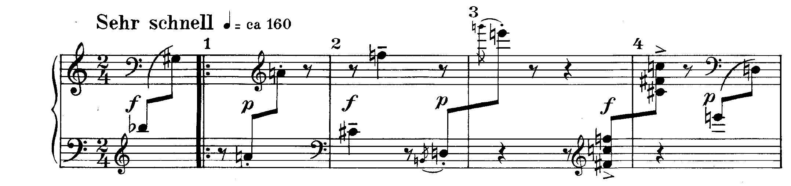
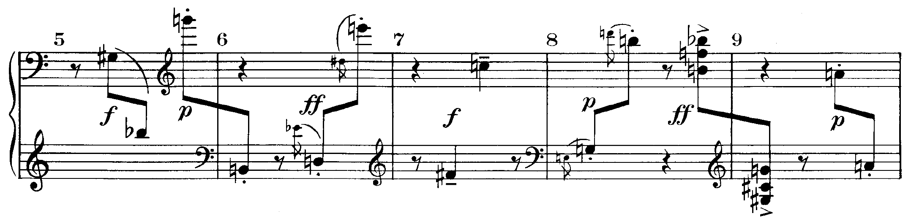
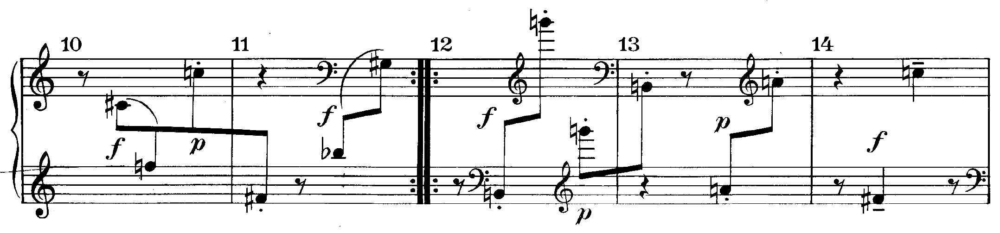

Lo specchio, per iscritto
L’analisi integrale scritta del secondo movimento delle Variazioni op. 27: dall’ascolto alla tesi, dai quattro piani al testo.
Al posto degli intervalli principali di prima — dominante, sottodominante, mediante, ecc. — acquistano adesso valore le simmetrie, le regolarità.
A. Webern, conferenza del 26 febbraio 1932, in E. Surian, Manuale di storia della musica, IV, p. 125
Lezione di due ore. Seconda ora: Analisi: Ligeti, «Musica ricercata» n. 1 — il materiale ridotto al minimo. I compiti per casa sono alla fine.
L’analisi integrale scritta di un brano seriale
CLa prova di tipo A: «analisi di una composizione, o di una sua parte significativa, tratta preferibilmente dalla letteratura musicale del XX secolo con relativa contestualizzazione storico-culturale», p. 270 · B23la dodecafonia, pp. 262–265 · D. D’Urso, C. Bertolini, Il linguaggio della musica, 5° anno.
1. Ogni forma della serie si nomina con il tipo e con il primo suono (RI da si♭), e si dice da dove viene: dalla serie del libro, dalla partitura, dall’analisi. 2. Si dichiara come si sono divisi i suoni fra le voci, quando la partitura non lo dice: è la segmentazione, e da essa dipende tutto il resto. 3. Registro, durata, dinamica e modo d’attacco si scrivono accanto alle altezze: in Webern sono materiale quanto le note. 4. Prima il dato con la battuta, poi l’interpretazione; le indicazioni dell’autore in corsivo, come stampate.
La tavola delle serie al posto dell’analisi. Elencare le forme della serie battuta per battuta è il lavoro preparatorio; il testo deve dire che cosa quell’ordine produce nel pezzo che si ascolta: lo specchio, i registri, la forma, il carattere.
Il pezzo e l’ascolto





La consegna
Scrivi l’analisi integrale del secondo movimento delle Variazioni op. 27: intestazione, introduzione con la tesi, i quattro piani (parametri; materiale e serie; forma; stile e contesto), conclusione con le fonti.
Il testo modello
Sintesi
L’intestazione; una tesi verificabile; nei quattro piani i dati con le battute: lo specchio sul la e le coppie di registro, le forme della serie con la segmentazione dichiarata, la forma in due metà, il contesto con le fonti; una conclusione che risponda alla tesi.
Dalla serie (op. 25) allo specchio (op. 27, op. 16), ai cicli (Messiaen), alla massa (Ligeti), al timbro (Varèse): ogni pezzo ha un ordine, e l’analisi deve dire dove sta e che cosa se ne sente.
La lezione si chiude con il solfeggio: si leggono a nomi, in tempo, le bb. 12–15, battendo la croma. Con questa lezione si chiude l’unità sulla serie e su ciò che viene dopo la serie.
Due suoni, un pezzo intero
Il primo dei pezzi di «Musica ricercata»: un solo suono, il la, in tutti i registri, e un secondo suono che arriva soltanto alla fine. Che cosa analizza l’analisi quando le altezze sono due.
I suoni, come disse Ligeti stesso, «sembrano venire dall’infinito e nell’infinito perdersi».
C. Galli, Storia della musica 3, p. 410
«Musica ricercata»: una raccolta costruita per sottrazione
Musica ricercata è una raccolta di undici pezzi per pianoforte, scritti a Budapest fra il 1951 e il 1953. Ogni pezzo usa un numero stabilito di classi di altezze: il primo ne usa due, e ogni pezzo successivo ne aggiunge una, fino alle dodici dell’ultimo, un omaggio a Frescobaldi. Il n. 1 è costruito sul la, in tutti i registri della tastiera, con ritmi, intensità e durate diverse; il secondo suono, il re, compare soltanto alla fine (unità 2, lezione 3).
La raccolta precede la stagione per cui Ligeti è più noto, quella delle fasce sonore statiche: Galli ne indica gli esiti in Lux aeterna (1966) e nel Requiem, con una musica che pare «venisse di lontano senza interrompersi mai» (Storia della musica 3, p. 410), e Surian ricorda la tecnica del continuum di Atmosphères (1961), in cui «non si distinguono voci individuali e non ci sono contorni ritmici» (IV, p. 216). In Musica ricercata il punto di partenza è opposto: il materiale è ridotto al minimo, e tutto ciò che accade è affidato agli altri parametri. Un saggio della «Rivista di analisi e teoria musicale» del GATM ricorda che nei pezzi n. 7 e n. 11 della raccolta si trovano già i primi esperimenti di Ligeti con l’ostinato (D. Meneghini, GATM 2014, p. 190).
La musica di Ligeti è protetta, e la partitura non è fra i materiali della classe: l’analisi di oggi si fa all’ascolto, con il cronometro. Le altezze sono due e non c’è niente da leggere che l’ascolto non dica; si scrivono, invece, i minuti e i secondi.
L’ascolto: che cosa cambia, se l’altezza non cambia
Due ascolti, con il cronometro. Sul quaderno, con il minuto e il secondo: 1. il registro: dove sta il la all’inizio, quando e come cambia ottava; 2. il ritmo: come si raggruppano gli attacchi, e se la velocità degli attacchi cresce; 3. la dinamica e la densità: dove il suono è più forte e più fitto; 4. il re: quando arriva, in quale registro, e come suona dopo tutto ciò che lo ha preceduto.
Quando l’altezza è ferma: i parametri che restano
| parametro | che cosa si misura | come si scrive nell’analisi |
|---|---|---|
| registro | l’ottava, o le ottave, in cui suona il la | dal grave all’acuto, con il tempo; lo spazio si apre o si chiude |
| ritmo | la distanza fra un attacco e il successivo; i gruppi | quanti attacchi per gruppo, e se la distanza diminuisce |
| dinamica | l’intensità di ogni gruppo | dove il pezzo è più forte, e se coincide con il registro più largo |
| densità | quanti suoni nello stesso momento (ottave sovrapposte) | da un suono solo all’ottava in più registri |
| silenzio | le pause fra i gruppi | dove il silenzio separa, e dove sparisce |
Sono gli stessi parametri che l’analisi di «Lux aeterna» ha usato per descrivere la fascia (unità 8, lezione 5), e quelli che nell’analisi dei Fünf Sätze di Webern separavano gesto da gesto (unità 7, lezione 8): registro, timbro, densità, dinamica. Qui il timbro è uno solo, il pianoforte, e l’altezza è una sola: il pezzo isola gli altri parametri come in un esperimento.
Un brano costruito su un materiale ridotto al minimo si analizza descrivendo la trasformazione dei parametri che cambiano, con il tempo in cui cambiano; la forma è il disegno di quella trasformazione. La domanda «in che tonalità è?» non ha una risposta utile; la domanda «che cosa cambia, e quando?» sì.
Al lavoro: otto battute su due suoni
Scrivi otto battute in 4/4 per pianoforte usando soltanto il la, in qualunque registro, e il re nell’ultima battuta. Il pezzo deve avere un punto culminante: il registro più largo, la dinamica più forte e gli attacchi più fitti nella stessa battuta.
Sintesi
Un pezzo intero con una sola classe di altezze, il la, e un secondo suono, il re, alla fine. La forma nasce dalla trasformazione del registro, del ritmo, della dinamica e della densità: il pedale non è più lo sfondo di un discorso armonico, è il pezzo.
Quando un parametro è fermo, si analizza tutto il resto in rapporto a lui, e lo si misura: con le battute se c’è la partitura, con il cronometro se non c’è. Si dice sempre con che cosa si è misurato.
La lezione si chiude con il solfeggio: si legge in ritmo, battendo la semiminima, il rigo superiore dell’esempio delle otto battute; poi lo si legge mentre un compagno batte il rigo inferiore.
Compiti per la prossima volta
1 · Scritto: Un pezzo con tre suoni
Scrivi sedici battute in 4/4 per pianoforte usando soltanto tre classi di altezze, a tua scelta, in qualunque registro. Sotto il rigo scrivi le dinamiche; sopra, il punto culminante.
Sul quaderno, a matita. La foto del lavoro finito va su Classroom. Nel Workbook: apri l’esercizio 9.1 ↗
Compiti per la prossima volta
2 · Solfeggio e 3 · dettato
n. 643 e n. 644 parlato · n. 645 endecalineo · n. 646 e n. 647 cantato · n. 648 e n. 649 ritmico
Ogni pezzo a tempo, senza fermarti: il parlato a nomi, il cantato prendendo il primo suono dalla tastiera, il ritmico battendo la pulsazione.
Scrivi la linea del basso sul quaderno, in chiave di basso: otto battute in 3/4, la minore. Il primo suono è la. Prima il riferimento, poi tutto due volte, ogni coppia di battute due volte, il collegamento 1–4, 3–6 e 5–8, e tutto per controllare.
Il riferimento: accordo di tonica e primo suono
Il dettato · otto battute
Le sezioni (riferimento, tutto, le coppie, il collegamento) si ascoltano una per una e si ripetono quanto serve; le fasi fanno la procedura della classe, con gli annunci e le pause, da qualunque punto.
Sul quaderno scrivi in testa la sigla C5-D-U09-L1. Si corregge all’inizio della prossima lezione.
Compiti per la prossima volta
Scrittura: contrappunto e armonia
Scrivi un contrappunto di quinta specie (il contrappunto fiorito) sotto il canto fermo, in modo misolidio (finale sol): nove battute. Comincia su una consonanza perfetta, alla cadenza la sensibile sale alla finale, niente quinte e ottave consecutive.
Sul quaderno, con la sigla C5-CP-U09-L1 in testa; la foto va su Classroom.
Realizza a quattro parti il basso senza numeri: sedici battute in 4/4, sol maggiore. Trova tu l’accordo di ogni nota (la regola dell’ottava è il punto di partenza) e scrivilo sotto; poi il soprano, poi le voci interne. Accordi che puoi usare: tutto quello studiato, e una modulazione a un tono vicino.
Sul quaderno, con la sigla C5-BD-U09-L1 in testa; la foto va su Classroom.
Armonizza a quattro parti il canto dato: sedici battute in 4/4, mi♭ maggiore. Prima le cadenze, poi il basso per intero, e solo alla fine contralto e tenore. Accordi che puoi usare: tutto quello studiato, e una modulazione a un tono vicino. La melodia modula: trova dove, e in quale tonalità arriva.
Sul quaderno, con la sigla C5-CD-U09-L1 in testa; la foto va su Classroom.
Testo per il registro elettronico
Scritto: Un pezzo con tre suoni (Workbook, esercizio 9.1), sul quaderno; la foto va su Classroom. Solfeggio dal quaderno di lettura: parlato n. 643, 644; endecalineo n. 645; cantato n. 646, 647; ritmico n. 648, 649 (a tempo, senza fermarsi). Dettato C5-D-U09-L1 dalla pagina della lezione (sezioni da ascoltare, o le fasi della procedura guidata), sul quaderno con la sigla. Contrappunto di quinta specie sul canto fermo (C5-CP-U09-L1). Basso senza numeri da realizzare a quattro parti (C5-BD-U09-L1). Canto dato da armonizzare a quattro parti (C5-CD-U09-L1).
In classe
Leggiamo insieme: parlato
A nomi, a tempo, con la mano che batte. Chi si ferma riparte dalla battuta dopo.
Apri il n. 638 nel quaderno di lettura ↗ chiave di contralto · 4/4 · do maggiore
In classe
Leggiamo insieme: endecalineo
A nomi, a tempo, sul doppio rigo: prima si trovano con gli occhi i passaggi da una chiave all’altra.
In classe
Leggiamo insieme: cantato
Si prende il tono dalla tastiera, si canta insieme; poi a gruppi.
Apri il n. 640 nel quaderno di lettura ↗ chiave di violino · 2/4 · la maggiore
Apri il n. 641 nel quaderno di lettura ↗ chiave di violino · 3/4 · fa maggiore
In classe
Leggiamo insieme: ritmico
Tutti insieme, battendo la pulsazione. Poi a file, due battute a testa.